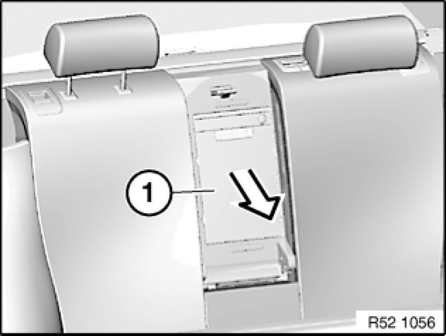
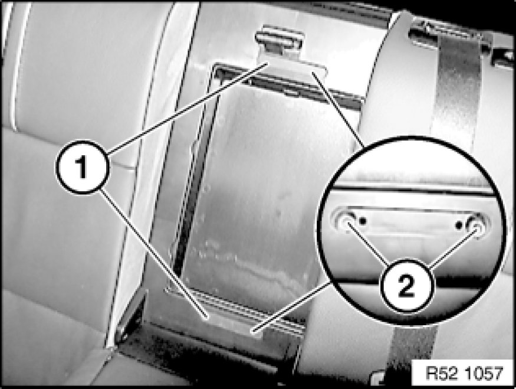
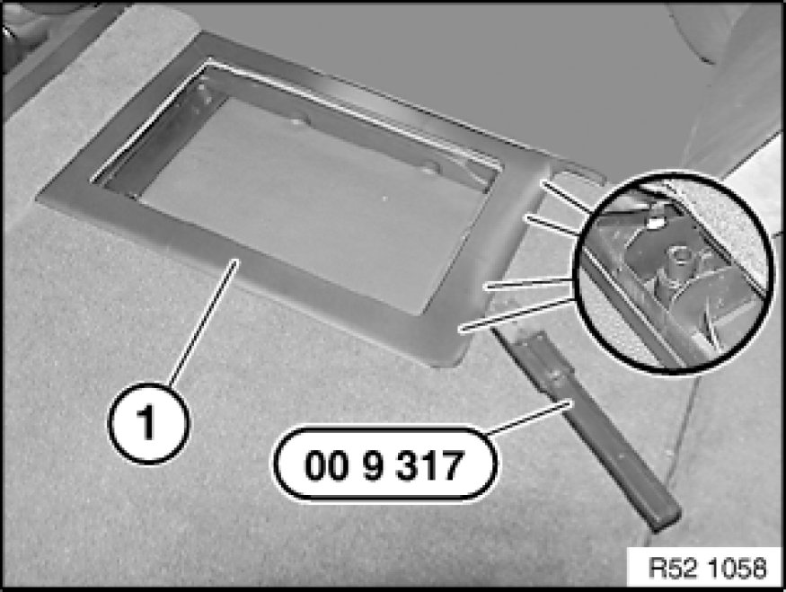
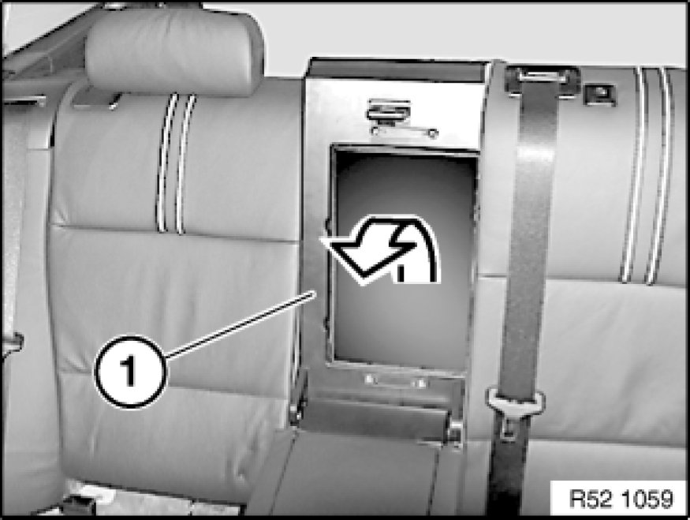

Removing and Installing/Replacing Ski Bag with Casing on Rear Seat (Through-Loading System)
52 26 ... - Removing and installing/replacing ski bag with casing on rear seat (through-loading system)

Special tools required:
- 00 9 317 00 9 317 Trim Panel Wedge

Necessary preliminary tasks:
- Remove center armrest Removing and Installing/Replacing Armrest for Rear Seat Backrest (Through-Loading System)

Press ski bag (1) on rear side out of backrest.

Lift off cover (1).
Release screws (2).
Installation:
Make sure cover is correctly installed.

Unclip mounting frame (1) on rear side with special tool 00 9 317 00 9 317 Trim Panel Wedge.
Installation:
Do not damage plastic clips. Danger of kinking!

Remove ski bag trim (1).